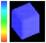

To evaluate the proposed algorithm, we also implemented the original MC algorithm and executed both algorithms on a Pentium II-300 personal computer. The following four datasets were used in our evaluation: (1) 256x256x30 Colon CT dataset (Figure 11), (2) 128x128x56 CT Head dataset (Figure 12), (3) 128x128x128 artificial Stomach dataset (Figure 13) and 16x16x16 volumetric Cube dataset (Figure 14). Table 1 compares the execution time of the surface tracker and the original MC algorithm. As shown in this table, the surface tracker always performs faster than the MC algorithm, and thus the proposed method gains computational saving. Experimental results show that the computational saving might not exactly increase with increasing resolution of datasets. In fact, it depends on the ratio of the number of non-empty cells over the size of volume data. To verify this observation, we also show the ratio information in Table 1. Among these four datasets, the Colon dataset performs the best due to the lowest ratio of no-empty cells. The isosurfaces extracted by both MC and surface tracker are identical for each dataset.
¡@
|
Dataset Method |
Execution
Time(sec) |
|||
|
Colon (256x256x30) |
Head (128x128x56) |
Stomach (128x128x128) |
Cube (16*16*16) |
|
|
MC |
3.55 |
12.34 |
10.01 |
0.11 |
|
Tracking |
0.68 |
6.46 |
6.74 |
0.06 |
|
Saving
(%) |
80.8 |
47.7 |
32.26 |
46.5 |
|
Ratio(%) |
5.16 |
12.91 |
20.5 |
11.28 |
Table 1. Computational saving of the surface tracker
Figure 11,12, 13 and 14 show experimental
results for Colon, CT head, Stomach and Cube datasets. In these figures,
we represent different meta-surfaces with different colors to observe the
growing results of the meta-surface. Table 2 shows various thresholds used
in these four experiments. These thresholds are defined in Section
3.2 (growing criteria). Table 3
shows the timing breakdown of these experimental results. In this table,
the time taken in building meta-surface includes both surface-tracking and
growing timings. Compared with the original MC algorithm, the total cost
of the proposed method is increased by about 36%
for colon, 65% for CT head, 26% for Stomach and 9% for Cube dataset,
respectively. However, we can achieve very high decimation rates such as
86% in colon, 79% in CT head, 69% in Stomach and 94% in Cube. Rendered
results of Stomach dataset, for example, for non-decimation (Figure 13
(f)) and decimation models (Figure 13 (g)~(j)) are very similar in the
visual quality. However, the number of triangles decimated is very high up
to 69%. In Table 3, we also show the number of meta-surface and triangles
generated. These numbers show a consistent trend: as specifying larger
thresholds in Table 2, we can generate less number of meta-surface and
triangles. For example, when the larger thresholds are used for colon
dataset (Figure 11 (c) and (d)), the decimating rate is obviously
increased from 78% to 86%. Other datasets such as CT head (Figure 12(b))
and Stomach (Figure 13 (g)~(j)), have the same trend in decimating rate.
To demonstrate the ability of decimation, we
use a volumetric Cube dataset to evaluate the proposed method, too. Figure
14 shows different representations of the Cube dataset. In this example,
each face of cube is successfully grown into a single meta-surface, and
each meta-surface is triangulated into two triangular surfaces. However,
for vertices on or near to the edges (as indicated by a circle in
Fig14-(c)), because of large difference in
 V., we need to
increase
V., we need to
increase
 V. up to 300
in our experiments. For the non-edge vertices, we just need to set a
smaller
V. up to 300
in our experiments. For the non-edge vertices, we just need to set a
smaller
 N., say 10.
Then, we can significantly decimate them in this example.
N., say 10.
Then, we can significantly decimate them in this example.
|
|
Plane
Normal (
N.) |
Vertex Normal
(
|
Dist (pixel) |
|
Fig11-(c) |
110 |
150 |
0.6 |
|
Fig11-(d) |
150 |
200 |
1.6 |
|
Fig12-(b) |
100 |
150 |
1.1 |
|
Fig13-(b) |
180 |
150 |
0.4 |
|
Fig13-(c) |
250 |
300 |
0.5 |
|
Fig13-(d) |
350 |
350 |
0.5 |
|
Fig13-(e) |
350 |
350 |
1.2 |
|
Fig14-(c) |
10 |
300 |
0.1 |
Table 2. Various thresholds used in Colon (Fig 11), CT head (Fig 12), Stomach (Fig 13) and Cube (Fig 14) datasets.
|
|
Execution
Time(sec.) |
|
|
|||
|
Building Meta-surface |
Triangulation |
Total
Time |
No.
of Meta-surfaces |
No.
of Triangles |
Decimation
rate (%) |
|
|
Fig11-(b) |
-- |
-- |
3.55 |
-- |
23358 |
-- |
|
Fig11-(c) |
3.42 |
1.82 |
5.24 |
482 |
5113 |
78.11 |
|
Fig11-(d) |
3.13 |
1.73 |
4.86 |
282 |
3323 |
85.78 |
|
Fig12-(a) |
-- |
-- |
12.34 |
-- |
96548 |
-- |
|
Fig12-(b) |
11.21 |
9.21 |
20.42 |
9566 |
20124 |
79.51 |
|
Fig13-(a) |
-- |
-- |
32.32 |
-- |
72652 |
-- |
|
Fig13-(b) |
29.12 |
15.01 |
44.13 |
11146 |
36332 |
49.99 |
|
Fig13-(c) |
28.01 |
14.87 |
42.88 |
7933 |
32704 |
54.98 |
|
Fig13-(d) |
27.45 |
14.12 |
41.57 |
6446 |
27894 |
61.60 |
|
Fig13-(e) |
26.85 |
13.85 |
40.70 |
5197 |
22613 |
68.87 |
|
Fig14-(a) |
-- |
-- |
0.11 |
-- |
764 |
-- |
|
Fig14-(d) |
0.10 |
0.02 |
0.12 |
26 |
44 |
94.25 |
Table 3. Timing breakdown of experimental results for Colon (Figure 11), CT head (Figure 12), Stomach (Figure 13) and Cube (Figure 14) datasets.
Figure 11. CT Colon: (a) the original MC triangular mesh, (b) MC rendering results (c) Growing-cube, 78% decimation, (d) Growing-cube, 86% decimation, and (e) the meta-surface of (d) case, where each meta-surface is shaded with different colors.
Figure 13. Stomach: (a) the original MC triangular mesh,(b)~(f) by the Growing-cube method at 49%, 54%, 61% and 68% decimating rates, respective and (f)~(j) the rendered results of (a)~(e), respectively.
Figure 14. Cube: (a) the original MC triangular mesh, (b) MC triangular wire-frame, (c) and (d) are wire-frames of meta-surface and triangular mesh at 94% decimating rate using Growing-cube method and (e) shows the same meta-surface but encoded in different colors.
0
(MC) 0.142
(GC 78%) 0.185
(GC 86%)
(I) Average error for Colon example in Figure 11
0(MC)
0.06(GC 80%)
0 (MC) 0.046 (GC 49%) 0.0827 (GC 54%) 0.103 (GC 61%) 0.313 (GC 68%)
(III) Average error for Stomach example in Figure 13

(IV) There is no error introduced by GC for Cube example (e) in Figure 14
Figure 15. The visualization of error introduced by the Growing cube (GC) method using color code for four experiments. In these figures, we also indicate the average error introduced in term of the width of a voxel.